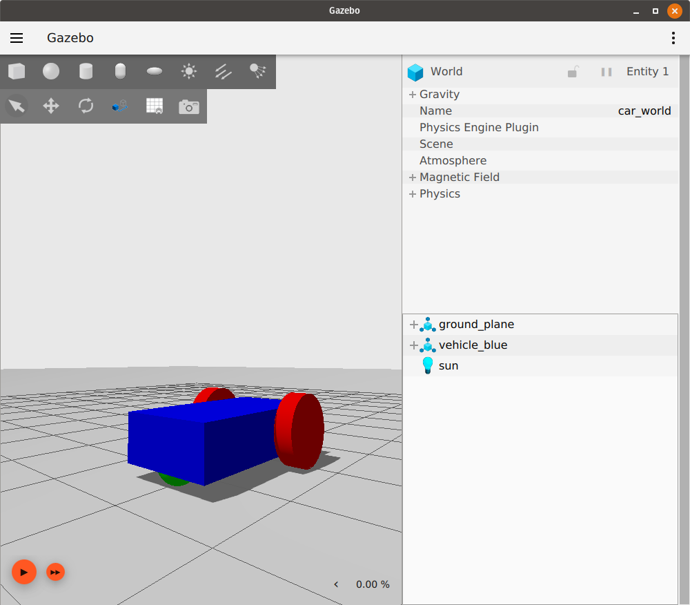

Building your own robot
이 튜토리얼에서는 SDFormat에서 우리만의 로봇을 만드는 방법을 배웁니다. 간단한 이륜 로봇을 만들 것입니다.
이 튜토리얼의 완성된 SDF 파일은 here에서 찾을 수 있습니다.
What is SDF
SDFormat (Simulation Description Format), 때때로 SDF로 약칭되며, 로봇 시뮬레이터, 시각화 및 제어를 위한 객체와 환경을 설명하는 XML 형식입니다.
Building a world
간단한 월드를 만드는 것으로 시작하여 그 안에 우리 로봇을 만들 것입니다. building_robot.sdf라는 새 파일을 열고 다음 코드를 복사하십시오.
<?xml version="1.0" ?>
<sdf version="1.10">
<world name="car_world">
<physics name="1ms" type="ignored">
<max_step_size>0.001</max_step_size>
<real_time_factor>1.0</real_time_factor>
</physics>
<plugin
filename="gz-sim-physics-system"
name="gz::sim::systems::Physics">
</plugin>
<plugin
filename="gz-sim-user-commands-system"
name="gz::sim::systems::UserCommands">
</plugin>
<plugin
filename="gz-sim-scene-broadcaster-system"
name="gz::sim::systems::SceneBroadcaster">
</plugin>
<light type="directional" name="sun">
<cast_shadows>true</cast_shadows>
<pose>0 0 10 0 0 0</pose>
<diffuse>0.8 0.8 0.8 1</diffuse>
<specular>0.2 0.2 0.2 1</specular>
<attenuation>
<range>1000</range>
<constant>0.9</constant>
<linear>0.01</linear>
<quadratic>0.001</quadratic>
</attenuation>
<direction>-0.5 0.1 -0.9</direction>
</light>
<model name="ground_plane">
<static>true</static>
<link name="link">
<collision name="collision">
<geometry>
<plane>
<normal>0 0 1</normal>
</plane>
</geometry>
</collision>
<visual name="visual">
<geometry>
<plane>
<normal>0 0 1</normal>
<size>100 100</size>
</plane>
</geometry>
<material>
<ambient>0.8 0.8 0.8 1</ambient>
<diffuse>0.8 0.8 0.8 1</diffuse>
<specular>0.8 0.8 0.8 1</specular>
</material>
</visual>
</link>
</model>
</world>
</sdf>
파일을 저장하고, 파일을 저장한 디렉토리로 이동한 다음 시뮬레이터를 실행하십시오:
gz sim building_robot.sdf
참고: 파일 이름을 원하는 대로 지정하고 컴퓨터의 아무 곳에나 저장할 수 있습니다.
지면과 태양광만 있는 빈 월드가 보일 것입니다. 자신만의 월드를 만드는 방법을 배우려면 World demo를 확인하십시오.
Building a model
</model> 태그 아래에 다음과 같이 로봇 모델을 추가할 것입니다:
Defining the model
<model name='vehicle_blue' canonical_link='chassis'>
<pose relative_to='world'>0 0 0 0 0 0</pose>
여기서는 우리 모델의 이름 vehicle_blue를 정의합니다. 이 이름은 동일 수준의 다른 태그나 모델(형제 요소) 사이에서 고유해야 합니다.
각 모델은 canonical_link로 지정된 하나의 링크를 가질 수 있으며, 모델의 암시적 프레임은 이 링크에 부착됩니다. 정의되지 않은 경우 첫 번째 <link>가 canonical_link로 선택됩니다.
<pose> 태그는 우리 모델의 위치와 방향을 정의하는 데 사용되며, relative_to 속성은 다른 프레임에 대한 모델의 포즈를 정의하는 데 사용됩니다.
relative_to가 정의되지 않으면 모델의 <pose>는 월드를 기준으로 합니다.
우리의 포즈를 world에 상대적으로 설정해 봅시다. 포즈 태그 안의 값은 다음과 같습니다: <pose>X Y Z R P Y</pose>, 여기서 X Y Z는 프레임의 위치를 나타내고 R P Y는 롤, 피치, 요(roll, pitch, yaw)에서의 방향을 나타냅니다.
두 프레임(모델과 월드)이 동일하도록 이 값들을 0으로 설정합니다.
Links forming our robot
모든 모델은 joints로 함께 연결된 links(단일 링크일 수도 있음) 그룹입니다.
Chassis
<link name='chassis'>
<pose relative_to='__model__'>0.5 0 0.4 0 0 0</pose>
자동차의 첫 번째 링크인 chassis와 model에 대한 상대 포즈를 정의합니다.
Inertial properties
<inertial> <!--inertial properties of the link mass, inertia matix-->
<mass>1.14395</mass>
<inertia>
<ixx>0.095329</ixx>
<ixy>0</ixy>
<ixz>0</ixz>
<iyy>0.381317</iyy>
<iyz>0</iyz>
<izz>0.476646</izz>
</inertia>
</inertial>
여기서는 <mass> 및 <inertia> 행렬과 같은 chassis의 관성 속성을 정의합니다. 기본 도형에 대한 관성 행렬 값은 이 tool을 사용하여 계산할 수 있습니다.
Visual and collision
<visual name='visual'>
<geometry>
<box>
<size>2.0 1.0 0.5</size>
</box>
</geometry>
<!--let's add color to our link-->
<material>
<ambient>0.0 0.0 1.0 1</ambient>
<diffuse>0.0 0.0 1.0 1</diffuse>
<specular>0.0 0.0 1.0 1</specular>
</material>
</visual>
이름에서 알 수 있듯이 <visual> 태그는 링크의 모양을 담당합니다.
<geometry> 태그 안에 링크의 모양을 <box> (육면체)로 정의한 다음, <size> 태그 안에 이 상자의 세 가지 치수(미터 단위)를 지정합니다.
그런 다음 <material> 태그 안에 링크의 재질을 정의합니다.
여기서는 <ambient>, <diffuse>, <specular> 색상을 각각 [0, 1] 범위의 네 숫자(빨강/녹색/파랑/알파) 세트로 정의했습니다.
<collision name='collision'>
<geometry>
<box>
<size>2.0 1.0 0.5</size>
</box>
</geometry>
</collision>
</link>
</model>
<collision> 태그는 링크의 충돌 속성, 즉 링크가 다른 객체와 어떻게 반응하고 물리 엔진의 영향을 어떻게 받을지를 정의합니다.
참고: <collision>은 시각적 속성과 다를 수 있습니다. 예를 들어, 계산 시간을 줄이기 위해 더 간단한 충돌 모델이 종종 사용됩니다.
위의 모든 부분을 순서대로 월드 파일에 복사한 후 월드를 다시 실행하십시오:
gz sim building_robot.sdf
우리 모델은 다음과 같아야 합니다:

왼쪽 상단 도구 모음에서 이동(Translate) 아이콘을 클릭한 다음 모델을 선택하십시오. 다음과 같이 세 개의 축이 보여야 합니다:

이것들은 우리 모델의 축이며, 빨간색은 x축, 녹색은 y축, 파란색은 z축입니다.
Left wheel
로봇에 바퀴를 추가해 봅시다. 다음 코드는 </link> 태그 뒤와 </model> 태그 앞에 들어갑니다. 동일한 모델에 속하는 모든 링크와 조인트는 </model> 앞에 정의되어야 합니다.
<link name='left_wheel'>
<pose relative_to="chassis">-0.5 0.6 0 -1.5707 0 0</pose>
<inertial>
<mass>1</mass>
<inertia>
<ixx>0.043333</ixx>
<ixy>0</ixy>
<ixz>0</ixz>
<iyy>0.043333</iyy>
<iyz>0</iyz>
<izz>0.08</izz>
</inertia>
</inertial>
링크 이름 left_wheel을 정의한 다음 chassis 링크에 대한 <pose> relative_to를 정의했습니다.
바퀴는 chassis 뒤쪽 왼쪽에 배치되어야 했기 때문에 pose 값을 -0.5 0.6 0으로 선택했습니다.
또한, 우리 바퀴는 실린더이지만 옆으로 누워 있습니다.
그래서 방향 값을 -1.5707 0 0으로 정의했는데, 이는 x축을 중심으로 -90도 회전한 것입니다(각도는 라디안 단위).
그런 다음 바퀴의 inertial 속성, 즉 mass와 inertia 행렬을 정의했습니다.
Visualization and Collision
<visual name='visual'>
<geometry>
<cylinder>
<radius>0.4</radius>
<length>0.2</length>
</cylinder>
</geometry>
<material>
<ambient>1.0 0.0 0.0 1</ambient>
<diffuse>1.0 0.0 0.0 1</diffuse>
<specular>1.0 0.0 0.0 1</specular>
</material>
</visual>
<collision name='collision'>
<geometry>
<cylinder>
<radius>0.4</radius>
<length>0.2</length>
</cylinder>
</geometry>
</collision>
</link>
<visual> 및 <collision> 속성은 이전 링크와 유사하지만, 링크의 모양이 <cylinder> 형태이며 실린더의 <radius>와 <length>라는 두 가지 속성이 필요하다는 점이 다릅니다.
파일을 저장하고 월드를 다시 실행하면 우리 모델은 다음과 같아야 합니다:

Right wheel
<!--The same as left wheel but with different position-->
<link name='right_wheel'>
<pose relative_to="chassis">-0.5 -0.6 0 -1.5707 0 0</pose> <!--angles are in radian-->
<inertial>
<mass>1</mass>
<inertia>
<ixx>0.043333</ixx>
<ixy>0</ixy>
<ixz>0</ixz>
<iyy>0.043333</iyy>
<iyz>0</iyz>
<izz>0.08</izz>
</inertia>
</inertial>
<visual name='visual'>
<geometry>
<cylinder>
<radius>0.4</radius>
<length>0.2</length>
</cylinder>
</geometry>
<material>
<ambient>1.0 0.0 0.0 1</ambient>
<diffuse>1.0 0.0 0.0 1</diffuse>
<specular>1.0 0.0 0.0 1</specular>
</material>
</visual>
<collision name='collision'>
<geometry>
<cylinder>
<radius>0.4</radius>
<length>0.2</length>
</cylinder>
</geometry>
</collision>
</link>
오른쪽 바퀴는 위치를 제외하고 왼쪽 바퀴와 유사합니다.
Defining an arbitrary frame
SDF 1.7부터 (Fortress는 SDF 1.8 사용) 임의의 프레임을 정의할 수 있습니다. 다음 두 가지 속성을 가집니다:
name: 프레임의 이름attached_to: 이 프레임이 부착된 프레임 또는 링크의 이름입니다.
캐스터 바퀴를 위한 프레임을 다음과 같이 추가해 봅시다:
<frame name="caster_frame" attached_to='chassis'>
<pose>0.8 0 -0.2 0 0 0</pose>
</frame>
프레임 이름을 caster_frame으로 지정하고 chassis 링크에 부착한 다음, <pose> 태그를 사용하여 프레임의 위치와 방향을 정의했습니다.
relative_to 속성을 사용하지 않았으므로 포즈는 attached_to 속성에 명명된 프레임, 이 경우 chassis를 기준으로 합니다.
Caster wheel
<!--caster wheel-->
<link name='caster'>
<pose relative_to='caster_frame'/>
<inertial>
<mass>1</mass>
<inertia>
<ixx>0.016</ixx>
<ixy>0</ixy>
<ixz>0</ixz>
<iyy>0.016</iyy>
<iyz>0</iyz>
<izz>0.016</izz>
</inertia>
</inertial>
<visual name='visual'>
<geometry>
<sphere>
<radius>0.2</radius>
</sphere>
</geometry>
<material>
<ambient>0.0 1 0.0 1</ambient>
<diffuse>0.0 1 0.0 1</diffuse>
<specular>0.0 1 0.0 1</specular>
</material>
</visual>
<collision name='collision'>
<geometry>
<sphere>
<radius>0.2</radius>
</sphere>
</geometry>
</collision>
</link>
마지막 링크는 caster이며, 그 포즈는 위에서 정의한 caster_frame 프레임을 기준으로 합니다.
보시다시피 위치나 방향을 정의하지 않고 pose 태그를 닫았습니다. 이 경우 링크의 포즈는 relative_to에 있는 프레임과 동일(항등)합니다.
<visual> 및 <collision> 태그에서 구의 <radius>를 필요로 하는 다른 모양 <sphere>를 정의했습니다.
Connecting links together (joints)
이 링크들을 함께 연결해야 합니다. 여기서 <joint> 태그의 역할이 중요해집니다.
조인트 태그는 두 링크를 함께 연결하고 서로에 대해 어떻게 움직일지를 정의합니다.
<joint> 태그 안에는 연결할 두 링크와 그 관계(움직임 방식)를 정의해야 합니다.
Left wheel joint
<joint name='left_wheel_joint' type='revolute'>
<pose relative_to='left_wheel'/>
첫 번째 조인트는 left_wheel_joint입니다.
이름 name='left_wheel_joint'와 유형 type='revolute'라는 두 가지 속성을 가집니다.
revolute 유형은 조인트 제한이 있는 1 회전 자유도를 제공합니다.
조인트의 포즈는 자식 링크 프레임, 즉 left_wheel 프레임과 동일합니다.
<parent>chassis</parent>
<child>left_wheel</child>
모든 조인트는 두 개의 링크(바디)를 함께 연결합니다.
여기서는 chassis를 left_wheel과 연결합니다.
chassis는 부모 링크이고 left_wheel은 자식 링크입니다.
<axis>
<xyz expressed_in='__model__'>0 1 0</xyz> <!--can be defined as any frame or even arbitrary frames-->
<limit>
<lower>-1.79769e+308</lower> <!--negative infinity-->
<upper>1.79769e+308</upper> <!--positive infinity-->
</limit>
</axis>
</joint>
여기서는 회전축을 정의합니다.
회전축은 parent 또는 child 링크뿐만 아니라 어떤 프레임이든 될 수 있습니다.
model 프레임에 대한 y축을 선택했으므로 y 요소에 1을 넣고 다른 요소에는 0을 넣었습니다.
회전 조인트의 경우 <lower> 및 <upper> 태그에서 회전 각도의 <limits>를 정의해야 합니다.
참고: 각도는 라디안 단위입니다.
Right wheel joint
right_wheel_joint는 조인트의 포즈를 제외하고 매우 유사합니다.
이 조인트는 right_wheel을 chassis와 연결합니다.
<joint name='right_wheel_joint' type='revolute'>
<pose relative_to='right_wheel'/>
<parent>chassis</parent>
<child>right_wheel</child>
<axis>
<xyz expressed_in='__model__'>0 1 0</xyz>
<limit>
<lower>-1.79769e+308</lower> <!--negative infinity-->
<upper>1.79769e+308</upper> <!--positive infinity-->
</limit>
</axis>
</joint>
Caster wheel joint
캐스터에는 다른 유형의 조인트(연결)가 필요합니다.
3 회전 자유도를 제공하는 type='ball'을 사용했습니다.
<joint name='caster_wheel' type='ball'>
<parent>chassis</parent>
<child>caster</child>
</joint>
Conclusion
월드를 실행하십시오:
gz sim building_robot.sdf
다음과 같아야 합니다:

만세! 첫 번째 로봇을 만들었습니다. SDFormat 태그에 대한 자세한 내용은 here에서 확인할 수 있습니다. 다음 tutorial에서는 로봇을 움직이는 방법을 배웁니다.
Video walk-through
이 튜토리얼의 비디오 연습은 저희 YouTube 채널에서 볼 수 있습니다: Gazebo tutorials: Building a robot.